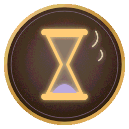

这 一 世 结 束 了
荒漠一株草 · 轮回结算

第 7 世 · 草精
寿终
首次
享年 22 季。
平平淡淡才是真。
最深 · 熔岩层
最高 · 鸟群高度
最远 · 枯萎绿洲
轮回收获
传承 · 老草的智慧
Lv1 · 开局灵性 +2
领悟技能 · 根网
已加入技能图鉴
存活 22 季 / 境界 草精 / 首次结局
+18 / +12 / +10
轮回点
+40
累计 326
图鉴
结局 6/15 技能 9/15 道具 8/11 事件 41/62
下一世的目标
· 沉没遗迹「读它」— 需要 传承 · 古语
· 鸟群高度「跟它谈谈」—
下一世可选！
看视频 · 轮回点翻倍
封存遗物 · 再次重生